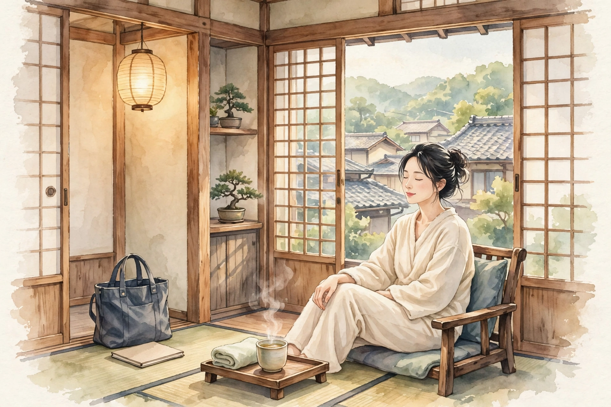

京都で週末に気になる疲労感｜一週間の疲れを整える過ごし方とセルフケア、受診の目安

金曜の夕方、仕事を終えて帰る道で、どっと疲れが出てくる。土曜の朝、目覚ましを止めて起き上がっても、体に一週間の重さが残っている——。 平日は忙しさの中でやり過ごしていても、週の終わりになると、一週間かけて少しずつ重なった疲労感が表に出てくる、という方は少なくありません。 この記事では、週末に表に出やすい疲労感について、一般的な解説と、平日の仕事や通勤、夕方から夜の過ごし方など考えられる要因の整理、週末と平日に取り入れられるセルフケア、受診の目安をまとめました。 なお、全身の疲労感そのものを取り上げた全身の疲労感の記事、休みの日の過ごし方から週末の疲労感を取り上げた週末の疲労感（休みの日の過ごし方）の記事、夜の寝つきに絞った寝つきと疲労感の記事とは場面を分け、ここでは「一週間を通して重なった疲れが、週の終わりに表に出る場面」に焦点を当ててご紹介します。
一週間の終わりに感じる疲労感とは
「疲労感」は、体や気持ちの疲れを主観的に感じる状態を表す、一般的な言葉です。 それ自体が病名というわけではなく、感じ方も人それぞれで、肩や腰といった特定の部位の重さとして感じる方もいれば、体全体が重く、何をするにも腰が重いと感じる方もいます。
この記事で取り上げるのは、月曜から金曜へと日を重ねる中で少しずつたまり、週の終わりに目立ってくるタイプの疲労感です。 金曜の夕方に帰り道の足取りが重く感じる、土曜の朝に起き上がっても体の重さが残っている、日曜の夕方に翌週のことを思うと気持ちまで重くなる——。 平日の間は予定に追われて気づきにくくても、週末に予定がゆるむと、一週間の積み重ねとして意識しやすくなります。 様子を見るときは、「週のどのあたりから重さを感じ始めたか」「週末の過ごし方でどう変わるか」「ほかに気になる変化はないか」の三つを目安にしてみてください。 発熱や体重の変化、息切れなどをともなう場合は、セルフケアで様子を見る前に、後述の受診の目安もあわせてご確認ください。
一週間の疲労感に考えられる要因
週末に表に出る疲労感の背景には、一つの原因ではなく、一週間を通した過ごし方の積み重ねが重なっていることがあります。一般に、要因として次のようなものが挙げられます。いずれも断定ではなく、ご自身の一週間を振り返るための整理としてご覧ください。
- 週の前半からの睡眠時間の不足の積み重ね：月曜から眠る時間が短い日が続くと、その不足は週の後半へ持ち越しやすくなり、金曜から土曜にかけて重さとして表に出ることがあります
- 仕事の山場や締め切りの集中：週の後半に会議や締め切り、気を遣う場面が重なる週は、気持ちの張りが続いた分、週末にどっと疲れを感じる方もいます
- 通勤や移動の積み重ね：毎日の通勤や、週の中での移動の多い日が重なると、歩く距離や立っている時間の合計が大きくなり、脚まわりから全身の重さにつながることがあります
- 同じ姿勢と画面時間の続く平日：デスクワークやスマートフォンを見る姿勢が平日に続くと、首や肩、目のまわりの疲れが重なり、それが全身のだるさとして感じられることがあります
- 平日の夕方から夜の過ごし方：帰宅後の家事や翌日の準備が続き、就寝が遅くなる日が重なると、一日の疲れを持ち越したまま翌朝を迎えやすくなります
- 平日の食事と水分のとり方：忙しい日に昼食を抜いたり、夕食の時刻が遅くなったり、水分をとる機会が減ったりする週は、体の重さを意識しやすくなることがあります
- 週末への予定の詰め込み：平日にできなかった買い物や掃除、家族の用事を土曜に寄せると、週末も休む時間が細切れになり、一週間の疲れが残ったまま次の週を迎えることがあります
- 週による波の違い：仕事の繁閑や天候、気温の変化によって、疲れの出やすい週とそうでない週があります。重さを感じる週が続くかどうかも、あわせて見ておきたいところです
東洋医学では、疲れが抜けにくい状態は、体を巡る「気」や「血」の不足や滞りと関係づけて考えます。 当サロンのお悩み別ガイドでも「全身の疲労感・リフレッシュ」や「眠りの浅さ・疲れが取れない」として、施術でのアプローチをご紹介していますので、あわせてご覧ください。
週末と平日に取り入れられるセルフケア
週末の二日間だけで立て直そうとせず、平日の中にも小さな区切りを置く対処をまとめました。一度に全部を変えようとせず、できそうなものから一つずつ、無理のない範囲で試してみてください。
- 金曜の夜は予定を詰めず、週を閉じる時間を作る：金曜の夜に用事を寄せすぎず、湯船につかる、早めに休むなど、一週間を区切る過ごし方を先に決めてみてください
- 土曜と日曜で役割を分ける：土曜は休むことを中心にし、日曜は近所を歩くなど軽く体を動かす日にするなど、二日間の配分を週ごとに眺めてみてください
- 週の途中に小さな休息をはさむ：水曜の夜は早めに休む、木曜の昼に短く目を閉じるなど、週末まで待たずに途中で区切りを置いてみてください
- 平日の昼に短い休憩と水分をとる：昼食の後に数分座って息を吐く、水やお茶をこまめに飲むなど、平日の基本的なところから見直してみてください
- 帰宅後の画面に区切りをつける：帰宅後の動画やスマートフォンは時間を決めて終え、就寝の時刻が大きく遅れないようにしてみてください
- 湯船につかる日を週に数回作る：平日の夜も、シャワーだけで済ませる日ばかりにせず、ぬるめのお湯にゆっくりつかる日を作ると、体を温め、気持ちを切り替える機会になります
- 週末の朝は光を浴びて軽く歩く：起きたらカーテンを開け、近所をゆっくり歩くなど、朝のうちに光と小さな運動を取り入れてみてください
- 一週間を短く振り返る：どの日に疲れが強かったか、どの日の夜によく休めたかを簡単に書き留めておくと、ご自身の週の波が見えてきます。次の週の予定を立てる手がかりにもなります
京都の週末は、寺社や町並みを歩く楽しみがある一方で、歩く距離が長くなりやすい面もあります。 疲れの強い週は遠出を控え、近場でゆっくり過ごす週と分けて考えることも、一週間との付き合い方の一つになります。
こんなときは医療機関へ
週末に表に出る疲労感の多くは一週間の積み重ねと関係しますが、中には医療機関での確認が必要な場合もあります。次のような場合は、内科など医療機関への受診をご検討ください。
- 強い倦怠感が2週間以上続く、週を追うごとに強くなる
- 発熱、急な体重の増減、息切れや動悸をともなう
- 食欲がない状態が続く、のどの渇きや排尿の変化が気になる
- 週末に休んでも疲れが残り、仕事や日常生活に支障が出ている
- 気分の落ち込みや意欲の低下が続いている
- 貧血を思わせるめまいや顔色の悪さがある
- 服用中の薬がある、持病の治療中である
当サロンは医療機関ではなく、施術はリラクゼーションと美容を目的としたものです。診断や治療は行いませんので、 気になる症状がある場合はまず医療機関へご相談ください。
サロンのご案内 — ステラアルタイル（京都）
ステラアルタイルは、京都市内の女性専用プライベートサロンです（阪急京都河原町駅・京阪祇園四条駅からご利用いただけます。詳しい住所は予約確定後にご案内します）。 オイルマッサージと美容整体を組み合わせ、背中・脚・腕・頭まわりまで全身の巡りをたどるように丁寧にケアします。施術の前には、その日の体の状態についてカウンセリングを行い、力加減を調整しながら進めます。日々の体の使い方や休み方についてもお伝えします。 夕方からの営業ですので、お仕事帰りにもご利用いただけます。土曜も営業していますので、週の終わりの過ごし方に合わせてご検討ください。
基本コースは90分10,000円（税込）の1コースです。月〜土17:00〜22:00（日曜休み）、完全予約制です。 現在は開院準備中で、予約の受付はまだ開始していません。